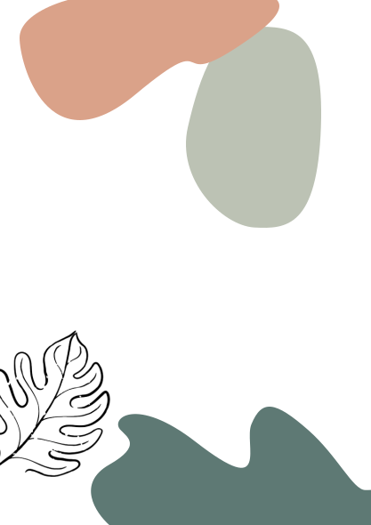

Plantes
Des guides clairs pour chaque plante

Magazine de plantes
pour les débutants

Découvrez le monde des plantes,
même sans la main verte.
Des guides clairs pour chaque plante

Des astuces pour un entretient optimal

Des conseils pour éviter les maladies
«Les plantes ne parlent pas,
mais elles ont beaucoup à dire.»

Arrosage:


Modéré
Lumière:


Mi-ombre
Entretient:


Faible
Style:
Plante d'intérieur
Hauteur:
Jusqu'à 5m
Couleur:
Verte

Le monstera, aux grandes feuilles vert brillant, aime les emplacements lumineux à mi-ombre sans soleil direct. Un manque de lumière empêche la formation de ses découpes, tandis qu’un excès brûle les feuilles. Il apprécie une atmosphère humide, une température autour de 21 °C, et un endroit plus frais d’octobre à février sans descendre sous 15 °C.
Plante grimpante de grande taille, il a besoin d’un grand pot dès le départ et de rempotages réguliers : fréquents pour les jeunes sujets, puis tous les 2 à 3 ans au printemps. Il faut préserver ses racines aériennes, utiles en cas de manque d’eau, de nutriments ou d’espace, mais qui ne doivent pas trop se développer.
Le monstera aime une humidité régulière sans eau stagnante, car l’excès d’arrosage noircit les bords des feuilles. Il est conseillé de le brumiser si l’air est sec, d’essuyer ses feuilles, d’utiliser de l’eau de pluie ou distillée, et de réduire les arrosages de novembre à mars.
Pour garder des feuilles bien vertes, il a besoin de fer et de potassium: fertilisez chaque semaine d’avril à août avec un engrais liquide pour plantes vertes, puis seulement toutes les 4 semaines de novembre à février.

Herbarium vous accompagne
à chaque étape de votre aventure végétale,
du premier pot à la jungle urbaine
À venir dans le prochain numéro

Cactus et succulentes: les plantes zéro stress

Comment créer un terrarium ?

Le pourrissement des racines, que faire ?
 http://www.herbarium-magazine.fr/
http://www.herbarium-magazine.fr/

@herbarium_mag

contact@herbarium.fr